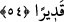
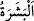
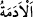
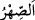

Öyle ise teslim ve rızâya sarıl
Damla denizle savaşmaya girişse
Aptaldır, kendi kendine eziyet etmiş olur
“Vehhâb” ve “Feyyâz” olan Allah’tan bizi bolluk denizine, geniş atâ ve ihsânına
daldırmasını niyaz ederiz. O buna kâdirdir.
54. Sudan (meniden) bir insan yaratıp onu nesep ve sıhriyet (kan ve evlilik
bağından doğan) yakınlığa dönüştüren O’dur. Rabbinin her şeye gücü yeter.
“Sudan (meniden) bir insan yaratıp” Bu su, Âdem (a.s.)’ın toprağının yoğrulduğu
sudur ya da nutfedir. “__WORD__ derinin dış yüzü, “__WORD__ ise et tarafına gelen iç tarafıdır.
İnsana “beşer” denilmesi, derisinin üzerinde fazla kıl olmayıp gözükmesindendir.
Koyun, keçi ve deve gibi derisinin üzerindeki yün ve kıllar bulunan hayvanlar ise böyle
değildir. Kur’ân’da insanın beden ve dış görünüşü konu edilen her yerde özel olarak
“beşer” lafzı kullanılmıştır. Bu kelime tekil ve çoğul için kullanılır.
“onu” insanı veya nutfeyi “nesep ve sıhriyet (kan ve evlilik bağından doğan)
yakınlığa dönüştüren O’dur.” Allah şu iki kısma ayırdı: Birincisi, neseb ve soyların
nisbet edildiği erkekler; meselâ denilir ki: Fülan oğlu fülan, fülan kızı fülâne.
Bir beyitte şöyle söylenmiştir:
İnsanların anneleri emânet konulan kaplardır.
Çocuklar babalara âiddir.
İkincisi, hısımlardır. Bunlar evlendiği ve birlikte yaşadığı kadın tarafıdır. Nitekim
Allah Teâlâ “Allah ondan (meniden) iki çifti; erkeği ve dişiyi var etti.” (el-Kıyâme,
75/39) buyurmuştur.
İmam Râğıb der ki: “Neseb” anne-baba tarafından bir ortaklıktır. İki kısımdır. Biri,
babalar ve oğullar arasındaki ortaklık gibi uzunlamasına olan neseb, diğeri kardeşler ve
amca çocukları arasında olan neseb gibi enlemesine olan neseb.”
el-Kâmûs’te geçtiği üzere “__WORD__ kişinin kızının kocası, yâni damadı ve kızkardeşinin
kocası, yâni eniştesidir. Bundan başka anlama geldiği de söylenmiştir. Tâcü’l-
masâdır’da “Musâhere, nikâh yoluyla bir kimseyle yakınlık kurmaktır” der.
“Rabbinin her şeye gücü yeter.” Kudretinin nihâyeti yoktur. Kudretiyle tek bir
maddeden çeşitli âzâları, birbirinden uzak tabiatları olan bir beşer yaratmış ve onu
birbirinin karşıtı iki kısma ayırmıştır. Bazen de bir maddeden erkek ve dişi olarak ikiz
yaratır.
Keşfü’l-esrâr’da der ki: “İbn Sîrîn der ki: Bu âyet Hz. Mustafa (a.s.) ve Ali (k.v.)